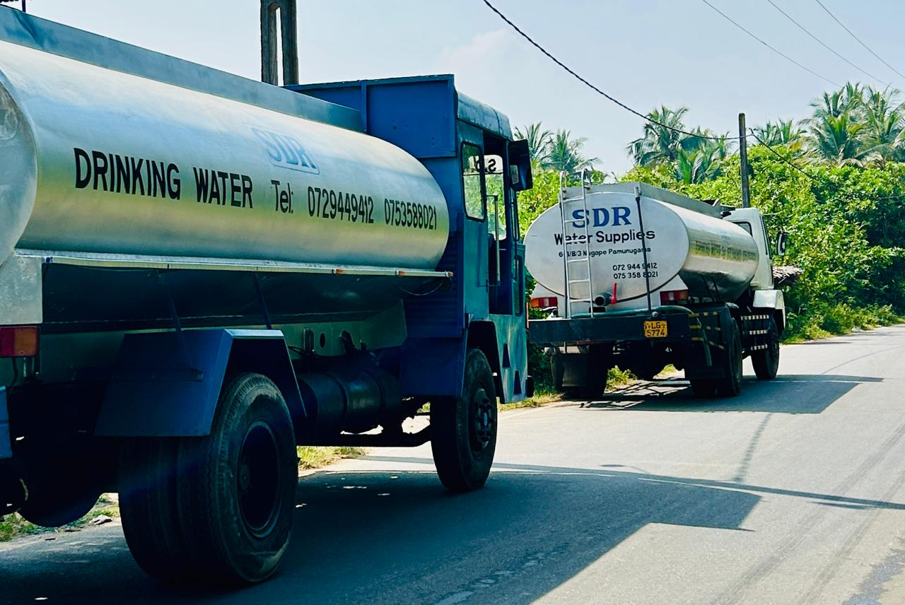

SDR Water Supplies is a locally operated water transport service based in Pamunugama, Kandana. Registered under Reg.No 00553, our mission is to deliver clean and safe bulk water efficiently throughout our community.
With our well-maintained Leyland Tusker Super Water Bowser, we specialize in supplying large volumes of water for domestic households, agricultural setups, and commercial operations.
Our commitment remains steadfast: to offer fast, reliable, and affordable bulk water delivery continuously adapting to modern demands without compromising on standards.

We guarantee prompt service with a robust and highly capable fleet:
We currently dispatch within a 30-kilometer radius from our 601/B/3, Nugape base. Primary coverage locations include:
We are constantly improving to bring you more value, convenience, and reach.
Expanding our reach beyond the 30km radius towards an all-island footprint.
Adding a second high-capacity vehicle to eliminate wait times completely.
Digital transformation via a comprehensive online booking system.
24-hour subscription-based automated water delivery plans.